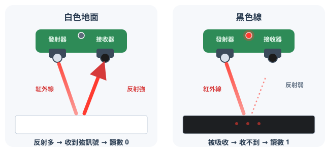
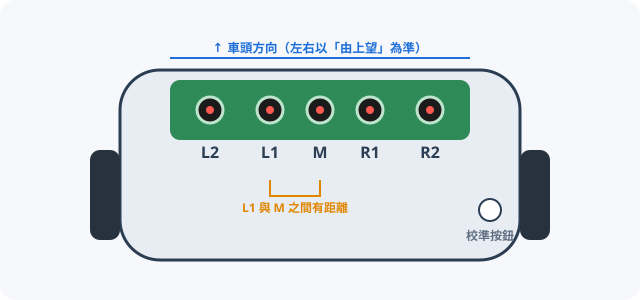
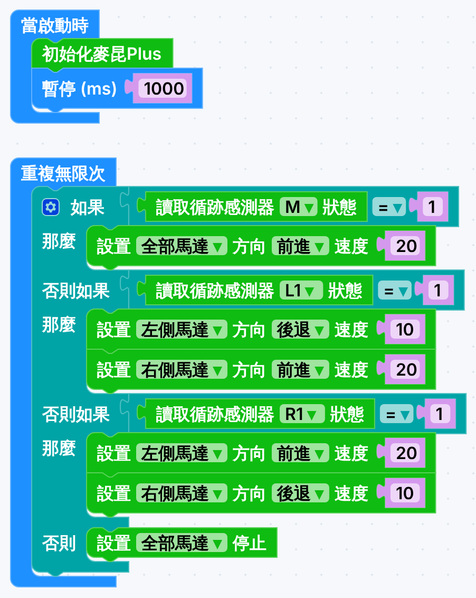

開始之前
- 解釋巡線感應器怎樣用紅外線分辨黑線和白色地面。
- 由感應器讀數判斷小車的位置，並決定向哪邊修正。
- 比較三種轉彎方式，寫出能走完一圈的巡線程式，再逐步提速。
熱身：上一課還記得嗎？不計分
本課滿分 50 分：概念練習 23 分；轉彎比較及實作 27 分。選擇題以第一次作答計分。
巡線感應器的原理
5 分
| 地面 | 紅外線反射 | 接收器收到 | 讀數 | 車底指示燈 |
|---|---|---|---|---|
| 白色／淺色 | 多 | 強訊號 | 0（不是黑線） | 熄 |
| 黑色／深色 | 少（被吸收） | 弱訊號 | 1（偵測到黑線） | 亮 |
小車有 5 路巡線感應器

| 感應器 | 位置 | 用途 | 本課使用 |
|---|---|---|---|
| L2 | 最左 | 急彎、交叉路口、大幅偏離 | 挑戰才用 |
| L1 | 左 | 黑線偏向左邊 → 要向左修正 | ✅ |
| M | 中間 | 黑線在車身正中 → 直行 | ✅ |
| R1 | 右 | 黑線偏向右邊 → 要向右修正 | ✅ |
| R2 | 最右 | 急彎、交叉路口、大幅偏離 | 挑戰才用 |
練習 1：填寫英文原理5 分
感應器會讀到 1 定 0？
6 分感應器不懂看顏色，只懂數反射光的多少。用這個原理判斷以下 9 個情況會讀到 1（當成黑線）還是 0（當成白色）。
做完之後，看重點
- 反射少就讀到 1：不只是黑色！深藍、離地太高、懸空、蒙塵，全部都會當成黑線。
- 反射多就讀到 0：白色、反光膠紙，甚至太淺的灰線都讀到 0。
- 所以巡線圖要用啞光黑線 ＋ 淺色底，感應器離地約 1–2 cm 最準。
配對：讀數代表車身在哪裏？
6 分下圖是由上望小車車頭：黑色圓點＝讀到 1，白色圓點＝讀到 0，灰色＝本課不用。
3 路感應器的 8 種組合
| L1 | M | R1 | 情況 | 意思 |
|---|---|---|---|---|
| 0 | 1 | 0 | 正常 | 黑線在正中 |
| 1 | 1 | 0 | 輕微偏離 | 黑線偏左（車身偏右） |
| 0 | 1 | 1 | 輕微偏離 | 黑線偏右（車身偏左） |
| 1 | 0 | 0 | 嚴重偏離 | 黑線在左邊，M 已離線 |
| 0 | 0 | 1 | 嚴重偏離 | 黑線在右邊，M 已離線 |
| 0 | 0 | 0 | 脫線 | 完全找不到黑線 |
| 1 | 1 | 1 | 特殊 | 橫線、交叉路口、大黑塊 |
| 1 | 0 | 1 | 特殊 | 兩側黑、中間白（雙線） |
由讀數到動作：理想上應該怎樣做？
6 分練習 2：這個讀數理想上應該做什麼？6 分
轉彎的力度：先預測，再試驗
9 分知道「要向左轉」之後，還要決定轉得多急。同樣向左轉，只要改變左右兩輪的關係，效果就完全不同：
試完之後，看解釋
原因一：感應器靠邊，我們「發現得遲」。L1／R1 離中線有一段距離，它們亮起時，車頭已經歪了不少，需要大角度修正。
原因二：「一邊停」轉得慢，而且車身仍向前推進。停住的那一邊變成圓心，車身整體向前掃出一個弧；低速時另一邊的馬達還要拖動被剎住的車輪，轉得更慢。在轉夠角度之前，黑線已經離開全部感應器（000）→ 程式走到「否則 → 停止」，小車停在線外。
③ 的分別：兩輪方向相反，圓心在兩輪中間，幾乎不向前推進，有足夠時間把車頭擺回黑線上。
一句記住：感應器靠邊＝發現得遲；發現得遲，就不能一邊向前衝、一邊慢慢轉。
老師用課室的小車和 0 字巡線圖實測，結果也是 ② 經常失敗、③ 可以完成。真車還會受電量和地面影響，所以模擬器和真車的結果不一定完全一樣。
| 轉彎方式 | 兩輪方向 | 轉彎半徑 | 急緩 | 適合 |
|---|---|---|---|---|
| ① 一邊慢、一邊快 | 相同 | 大 | 最緩 | 偏離很小的時候；要感應器排得密，或者用齊 5 路 |
| ② 一邊停、一邊行 | 一邊不動 | 中 | 中等 | 修正時車身仍會前衝；本車只用 L1／R1 時不夠用 |
| ③ 一邊後退、一邊前進 | 相反 | 細（近原地） | 最急 | 一發現就已偏離很多的時候 ✔ 本課採用 |
練習 3：這個馬達組合會令小車怎樣走？6 分
提示：慢、停、後退的那一邊，就是車頭擺去的方向；兩輪方向相反＝轉得最急。
實作：製作巡線機械人，自己走完一圈
16 分1建立專案及加入擴展
專案名稱：班別_學號_linebot。在「擴展」貼上 https://github.com/DFRobot/pxt-DFRobot_MaqueenPlus_v20，選 maqueenPlusV2（每個新專案都要再加一次）。
2今次的新積木
| 積木（MakeCode 的寫法） | 指令群 | 作用 |
|---|---|---|
| 讀取循跡感測器 M 狀態 | 麥昆Plus V2&V3 | 回報 1（黑線）或 0（白色）；可選 L2／L1／M／R1／R2。注意：MakeCode 寫「循跡感測器」，就是我們說的巡線感應器 |
| 如果 … 那麼 … 否則 | 邏輯 | 作決定。按齒輪 ⚙ 可以加入「否則如果」 |
| … ＝ … | 邏輯 | 比較，例如「讀數 ＝ 1」 |
| 重複無限次 | 基本 | 不停「感知 → 決定 → 動作」 |
3決策表（老師實測可行的起步設定）
| 讀數 | 動作 | 轉彎方式 | 馬達設定 |
|---|---|---|---|
| M ＝ 1 | 前進 | 兩輪同速 | 全部馬達 前進 20 |
| L1 ＝ 1 | 向左修正 | ③ | 左側 後退 10、右側 前進 20 |
| R1 ＝ 1 | 向右修正 | ③ | 左側 前進 20、右側 後退 10 |
| 三個都 ＝ 0 | 停止 | — | 全部馬達 停止 |
4砌出完整程式

5校準感應器（第一次測試前做）
- 把小車放在巡線圖的大黑塊（或黑線）上，令 5 個感應器都對着黑色。
- 長按車底的校準按鈕約 1 秒，指示燈閃過即完成。
- 放回白色位置，檢查 5 個指示燈都熄；移到黑線上，對應的燈會亮。
換了場地、燈光或電池後，都要再校準一次。
6下載及真車測試
- 在模擬器按「匯出到 MakeCode」，或者照圖自己砌，然後下載到 micro:bit。
- 拔掉 USB，把小車放在 0 字巡線圖的起點，M 對正黑線。開電源，1 秒後開始。
用 iPad？
用「micro:bit」app 經藍牙傳送程式（按住 A+B 再按 reset 進入配對模式，再依 app 指示）。
7優化：提速與計時4 分
走得完之後，令它走得快、走得順。每次只改一樣東西，再計時記錄——這就是工程師的試驗與修正。
- 直行速度：由 20 開始，每次加 10。
- 後退力度：數值越大轉得越急（易左右擺動），越小越溫和（但可能救不回黑線）。
- 不要改成「一邊停」或「一邊慢一邊快」：只用 L1／R1 時實測會脫線。想用溫和修正，要先加入 L2／R2 做分層修正——這是下一課的任務。
8除錯
| 現象 | 可能原因 | 解決方法 |
|---|---|---|
| 完全不動 | 沒有初始化、程式不在「重複無限次」內、電池弱 | 逐項檢查；換新電池 |
| 不理黑線，一直向前 | 條件寫錯，或沒有校準 | 檢查「＝ 1」；重新校準 |
| 一開始就原地打轉 | 擺位不對，M 沒有對正黑線 | 放車時令黑線穿過車身中央（不要加速） |
| 彎位衝出黑線 | 速度太快，或修正方式太溫和 | 降低直行速度；確認修正時一輪後退、一輪前進 |
| 左右擺動得很厲害 | 後退力度太大 | 調低後退那一邊的速度（仍然保持後退） |
| 越走越歪、轉錯方向 | 左右修正調轉了 | 黑線在左就向左轉：左輪後退、右輪前進 |
| 讀數時常亂跳 | 探頭有灰塵、地面反光、未校準 | 抹乾淨探頭；避開反光地板和強光；重新校準 |
自我檢查2 分
挑戰（不計分）
- 計時挑戰：在不脫線的前提下，找出最快的設定。同組互相計時。
- 平滑挑戰：保持「一邊後退」，逐步調低後退速度，找出剛好不會衝出黑線的最溫和設定。
- 設計你自己的巡線圖：用 A3 紙和 2 cm 黑色膠帶設計一張巡線圖，要包括一個急彎和一個 S 彎。設計要求：線闊一致、彎位半徑不少於 6 cm、起點有標記、四邊留 5 cm 空位。和同組交換測試，記錄哪個彎最難，並改良設計。
總結、詞彙及學習日誌
2 分- 巡線感應器＝紅外線發射器＋接收器，靠反射光多少分辨黑白：黑線 ＝ 1，白色 ＝ 0。
- 它只懂「反射多少」，所以深色、懸空、離地太高、蒙塵都會讀到 1；反光膠紙和太淺的線會讀到 0。
- 核心法則：黑線在哪邊，就轉向那邊。
- L1／R1 靠邊，一亮起已偏離不少，所以修正要用「一邊後退、一邊前進」。
- 巡線程式放在「重複無限次」內，令「感知 → 決定 → 動作」不停循環：閉環控制。
- 設計流程：先做到可行，再逐步優化，每次只改一樣，並記錄結果。
| 中文 | English | 中文 | English |
|---|---|---|---|
| 巡線感應器 | Line-following sensor | 紅外線 | Infrared (IR) |
| 反射 | Reflection | 校準 | Calibration |
| 條件判斷 | If … else … | 閉環控制 | Closed-loop control |
| 差速轉向 | Differential steering | 自動導引車 | AGV |
學習日誌（最少 20 字）
你預測哪種轉彎方式？結果怎樣？真車和模擬器有什麼不同？
成績及交功課
繳交：下載成績報告（例如 DT_F1_L2_1A_12_陳大文.html），連同 MakeCode 分享連結，上傳到 Google Classroom／eClass。